Author: Chunrui Zou Date: February 2026 Assignment: Merck Pre-Interview Coding Assignment
This project demonstrates how pathology foundation models can be repurposed for cell segmentation. We adapt DinoBloom, a hematology-specific foundation model pre-trained on 13 blood cell datasets, to perform semantic segmentation on the BCCD blood cell dataset.
# Install dependencies
pip install -r requirements.txt
# For GPU support
pip install torch==2.6.0+cu118 torchvision==0.21.0+cu118 --index-url https://download.pytorch.org/whl/cu118
Download the BCCD dataset from Kaggle and organize as follows:
cell_segmentor/
└── Data/
└── BCCD/
├── train/
│ ├── original/ # Training images (1,169 files)
│ │ ├── image1.jpg
│ │ ├── image2.jpg
│ │ └── ...
│ └── mask/ # Training masks (1,169 files)
│ ├── image1.png # Binary mask (0=background, 255=cell)
│ ├── image2.png
│ └── ...
├── test/
│ ├── original/ # Test images (159 files)
│ │ └── ...
│ └── mask/ # Test masks (159 files)
│ └── ...
└── splits.json # Train/val split (auto-generated)
Important notes:
splits.json is auto-generated on first run (80% train, 20% val)Download DinoBloom checkpoints from Zenodo and place in:
cell_segmentor/
└── DinoBloom/
└── checkpoints/
├── DinoBloom-S.pth # Small - RECOMMENDED
├── DinoBloom-B.pth # Base
└── DinoBloom-L.pth # Large
Recommended: Start with DinoBloom-S.pth for faster training and lower memory usage.
To skip training and use our pre-trained model, the checkpoint is located at:
cell_segmentor/
└── Codes/
└── outputs/
└── training/
└── tiling_transposed_conv_20260203_203221/
├── best.pth # Best checkpoint (Dice: 0.9536)
├── config.json # Training configuration
└── history.json # Training history
cd cell_segmentor
jupyter notebook cell_segmentation.ipynb
The notebook includes:
Training:
cd cell_segmentor
python Codes/main.py \
--mode tiling \
--backbone small \
--head transposed_conv \
--epochs 20 \
--batch_size 8 \
--lr 1e-4 \
--loss bce_dice \
--scheduler cosine \
--early_stopping 10
Evaluation:
python Codes/evaluate.py \
--checkpoint Codes/outputs/training/tiling_transposed_conv_20260203_203221/best.pth \
--visualize 10
cell_segmentor/
├── Codes/
│ ├── backbone/ # DinoBloom wrapper
│ │ └── dinobloom.py # Model loading and feature extraction
│ ├── data/ # Data loading pipeline
│ │ ├── dataset.py # PyTorch Dataset classes
│ │ ├── transforms.py # Image preprocessing
│ │ ├── tiling.py # Tile extraction and stitching
│ │ └── splits.py # Train/val split utilities
│ ├── models/ # Model architecture
│ │ ├── segmentation_head.py # Decoder heads
│ │ └── cell_segmentor.py # Full model (backbone + head)
│ ├── training/ # Training pipeline
│ │ ├── losses.py # BCE + Dice loss
│ │ └── trainer.py # Training loop
│ ├── evaluation/ # Metrics and visualization
│ │ ├── metrics.py # IoU, Dice, Precision, Recall
│ │ └── visualize.py # Prediction visualization
│ ├── utils/ # Utility scripts
│ │ ├── explore_bccd.py # Dataset exploration
│ │ └── analyze_cells.py # Cell statistics analysis
│ ├── unitTest/ # Unit tests and experiments
│ │ ├── 01_model_loading/ # DinoBloom loading tests
│ │ ├── 02_data_pipeline/ # Data pipeline tests
│ │ ├── 03_inference/ # Feature extraction experiments
│ │ ├── 04_model_architecture/ # Model architecture tests
│ │ ├── 05_training/ # Training pipeline tests
│ │ └── 06_evaluation/ # Evaluation tests
│ ├── outputs/ # Generated outputs
│ │ ├── exploration/ # Dataset analysis figures
│ │ └── training/ # Checkpoints and logs
│ ├── main.py # Training entry point
│ └── evaluate.py # Evaluation entry point
├── Data/
│ └── BCCD/ # Dataset (see Data Setup above)
├── DinoBloom/
│ ├── checkpoints/ # Model weights (see Model Weights above)
│ └── dinov2/ # DINOv2 backbone code
├── cell_segmentation.ipynb # Main notebook
├── requirements.txt # Python dependencies
└── README.md # This file
Demonstrate how pathology foundation models can be repurposed for cell segmentation.
Use DinoBloom (a hematology-specific foundation model) as a frozen feature extractor, adding a lightweight segmentation head to produce pixel-level predictions on the BCCD blood cell dataset.
| Challenge | Impact | Our Solution |
|---|---|---|
| High dimension images | Memory constraints and larger model input than DinoBloom training samples (224x224) | Tiling approach |
| Semantic imbalance | Model biased to background | BCE + Dice loss |
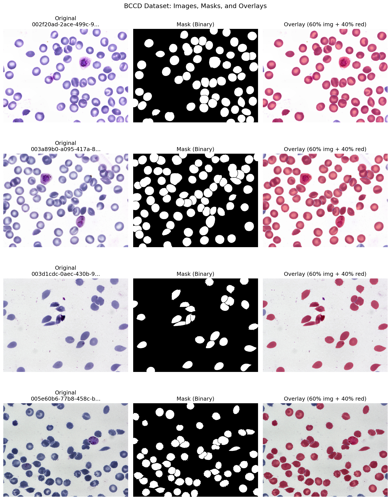
Figure 1: Sample images from BCCD dataset (top row) and their corresponding binary masks (bottom row). Image dimensions are 1600×1200 pixels.
From analyzing 100 sampled training images:
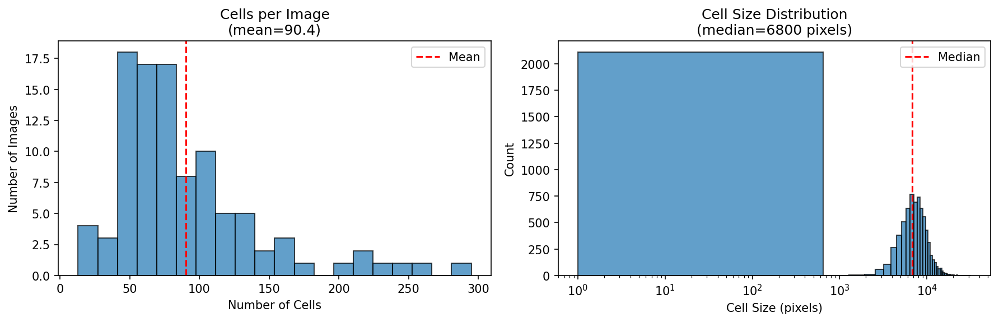
Figure 2: Cell statistics distribution across the dataset.
| Aspect | UNI | DinoBloom |
|---|---|---|
| Training Data | General pathology (100M+ patches) | Hematology-specific (13 blood cell datasets) |
| Domain Match | General | Directly matches BCCD |
| Architecture | ViT-L | ViT-S/B/L (DINOv2-based) |
Rationale: DinoBloom was trained on blood cell images, making its features better suited for BCCD. Its relevance was further confirmed by visualizing the forward features from the backbone in below analysis.
The DinoBloom comes with different model sizes with embedding sizes:
| Model | Embedding Dim | Parameters |
|---|---|---|
| DinoBloom-S (Small) | 384 | 22M |
| DinoBloom-B (Base) | 768 | 86M |
| DinoBloom-L (Large) | 1024 | 304M |
| DinoBloom-G (Giant) | 1536 | 1.1B |
Features for sampled BCCD images from different model sizes were visualized.
Due to the BCCD images are larger than the training images for DinoBloom, I have to preprocess the BCCD images and decide a proper model size to use. I have listed three strategies for image preprocessing:
Three strategies were visualized below in different columns using sampled images (different samples for now due to time limit) with different model sizes (small in the first row, base in the second row, large in the last row). The embeddings for each token of an embedding size were reduced to 3 principal components by PCA. Due to model differences and sample differences, PCA will result in different values which cause color variations.
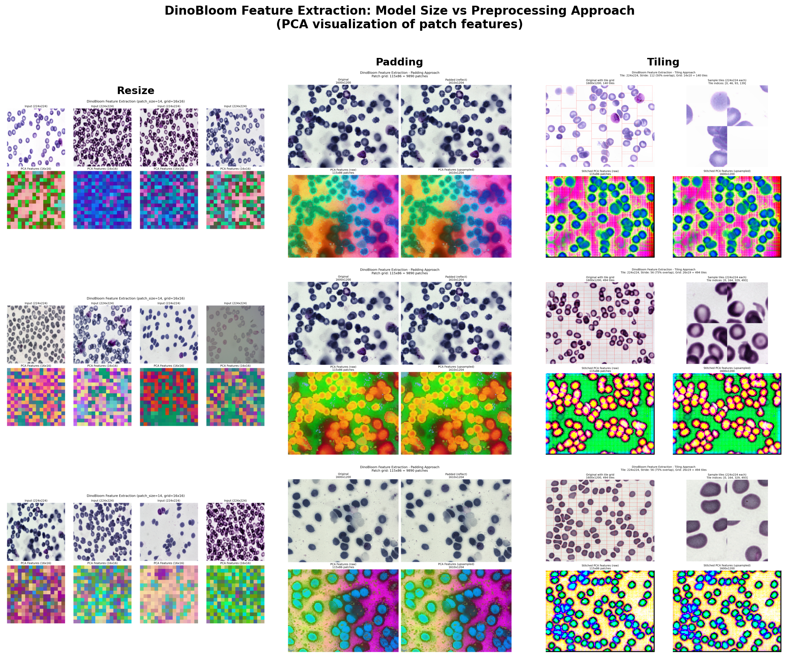
Figure 3: DinoBloom feature extraction comparison across model sizes (rows: Small, Base, Large) and preprocessing approaches (columns: Resize, Padding, Tiling). Features visualized using PCA reduction to 3 components.
Observations:
Conclusion (DinoBloom-S with tiling and padding):
Input Image (224x224x3) -> Backbone (Frozen) -> Patch Features (256x384) -> Reashpe to (16x16x384) -> Segmentation Head -> Output Logits (2x224x224)
| Component | Purpose |
|---|---|
| Cross-Entropy | Pixel-level accuracy, stable gradients |
| Dice Loss | Handles class imbalance, measures overlap |
With majority pixels being background, pure BCE would bias toward predicting background. Dice loss directly optimizes the overlap metric we care about.
The model converged quickly due to the frozen backbone: the pre-trained features are already highly relevant for blood cell images. Best checkpoint saved at epoch 13.
We first go on with the small model and only 20 epochs for training. And I found it is enough to obtain good segmentation results just for demonstration. The training reaches minimum before epoch 20.
| Parameter | Value | Justification |
|---|---|---|
| Epochs | 20 | Sufficient for frozen backbone |
| Batch Size | 8 | Balance memory and gradient stability |
| Learning Rate | 1e-4 | Standard for Adam with frozen backbone |
| Optimizer | AdamW | Better generalization |
| Scheduler | Cosine Annealing | Smooth LR decay |
| Early Stopping | 10 epochs patience | Prevent overfitting |
| Loss | BCE + Dice (0.5 each) | Handle class imbalance |
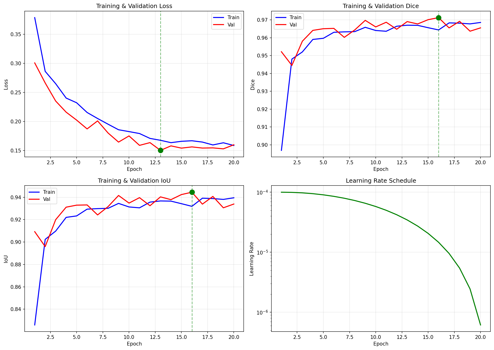
Figure 4: Training and validation loss (left) and validation Dice score (right) over epochs. Best checkpoint at epoch 13.
Best epoch: 13 (val_loss: 0.1504, val_dice: 0.9691)
| Metric | Value | Description |
|---|---|---|
| Cell IoU | 0.9112 | Intersection over Union |
| Cell Dice | 0.9536 | Primary segmentation metric |
| Precision | 0.9396 | Few false positives |
| Recall | 0.9680 | 96.8% of cells detected |
| Accuracy | 0.9709 | Overall pixel accuracy |
| Class | IoU | Dice |
|---|---|---|
| Background | 0.9584 | 0.9788 |
| Cell | 0.9112 | 0.9536 |
| Mean | 0.9348 | 0.9662 |
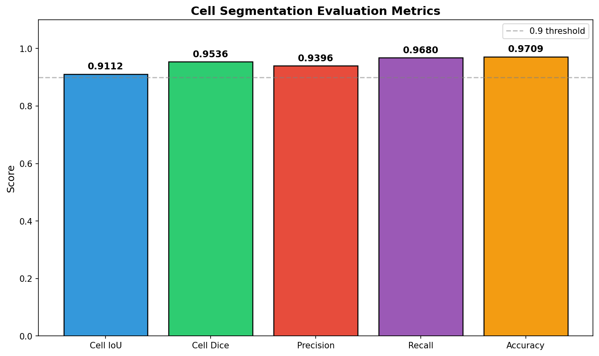
Figure 5: Bar chart of evaluation metrics on test set.
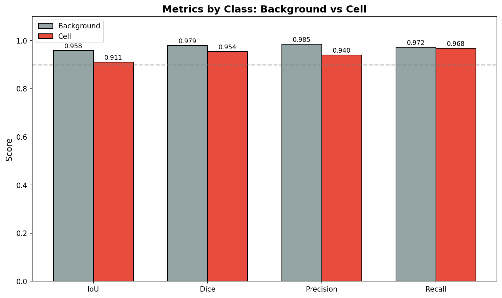
Figure 6: Per-class metrics comparison (Background vs Cell).
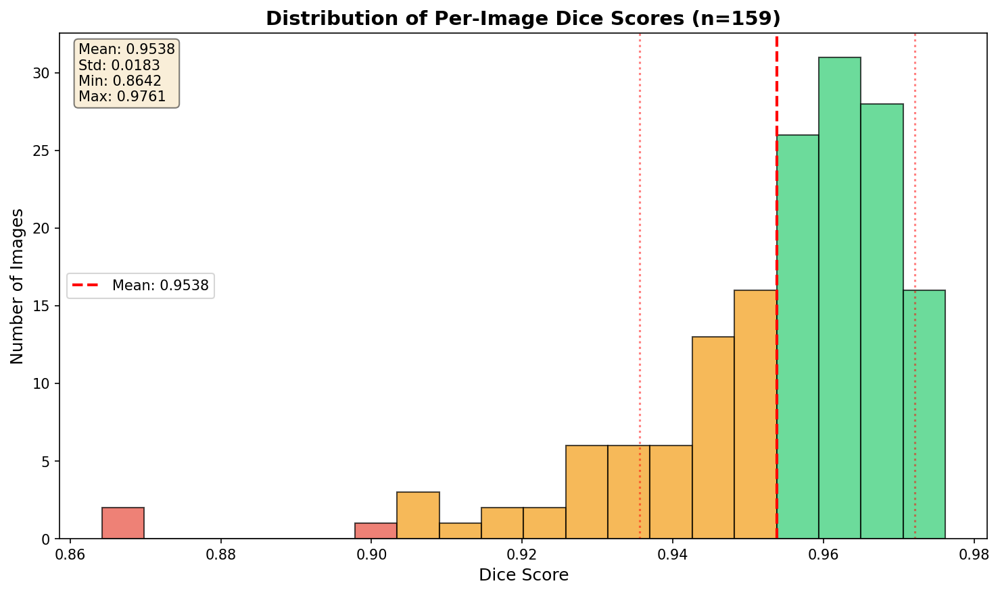
Figure 7: Distribution of per-image Dice scores across the test set.
Note: some mismatches are actually caused undersegmented ground truth masks, especially those cut by image boundaries.
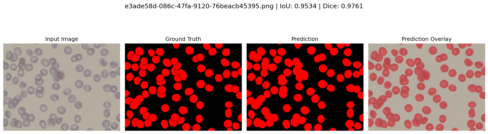
Figure 8: Success case showing accurate cell segmentation with high Dice score (0.9761).
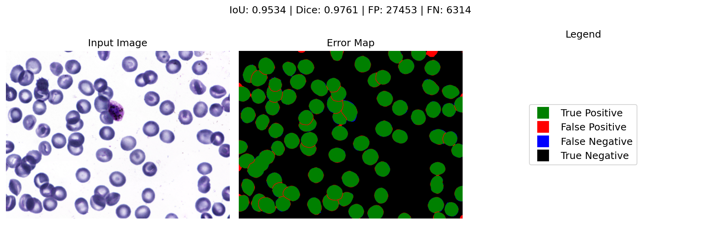
Figure 9: Error map for success case. Green=True Positive, Red=False Positive, Blue=False Negative, Black=True Negative.
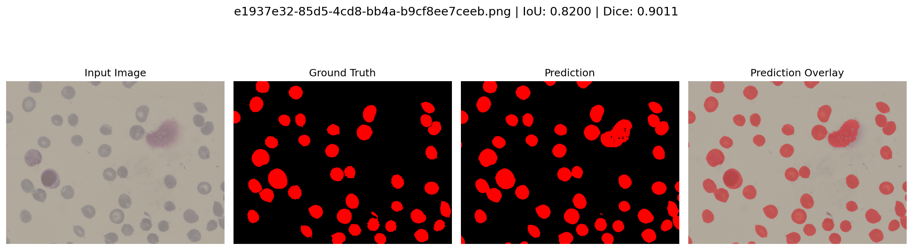
Figure 10: Challenging case with lower Dice score (0.9011), showing more difficult segmentation scenarios.
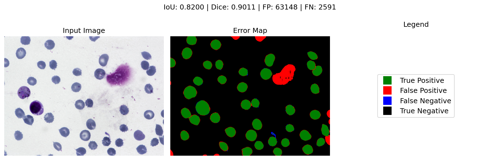
Figure 11: Error map for challenging case showing areas of false positives and false negatives.
| Improvement | Expected Benefit |
|---|---|
| Fine-tune last 2-3 backbone layers | potentiall performance improvement |
| Instance segmentation head | Separate overlapping cells |
| Auto-tune implementation | Handle color/staining variations |
| Padding implementation | potential better performance |
This project demonstrates that pathology foundation models can be effectively repurposed for cell segmentation with minimal training. By leveraging DinoBloom's pre-trained features and adding a lightweight segmentation head, we achieve strong performance (Dice > 0.95) while training only with basic model size.
Key Takeaways:
The approach is practical for real-world deployment: fast training, low memory requirments, and strong performance during inference.